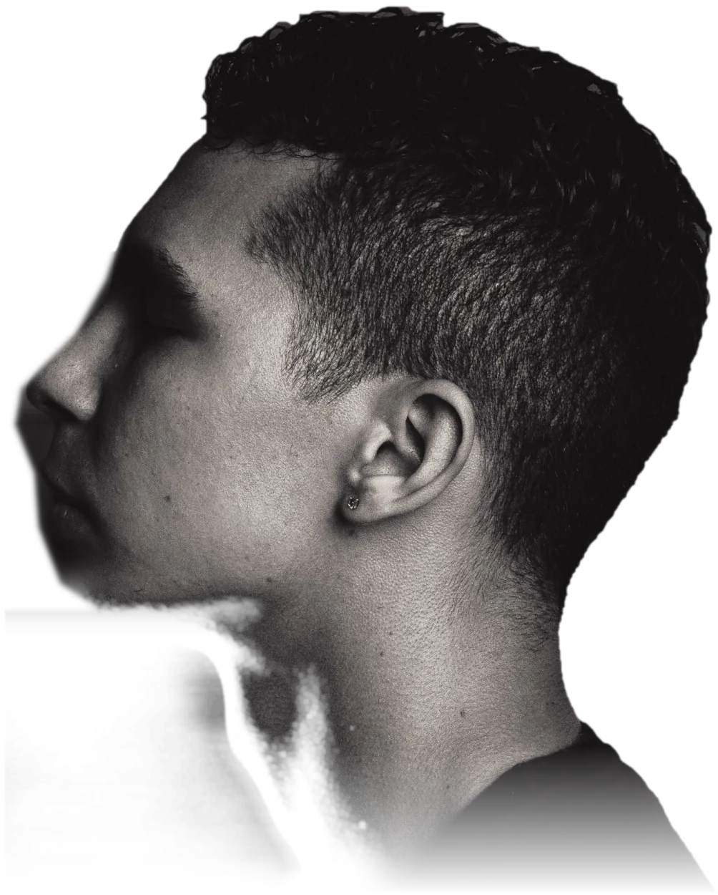
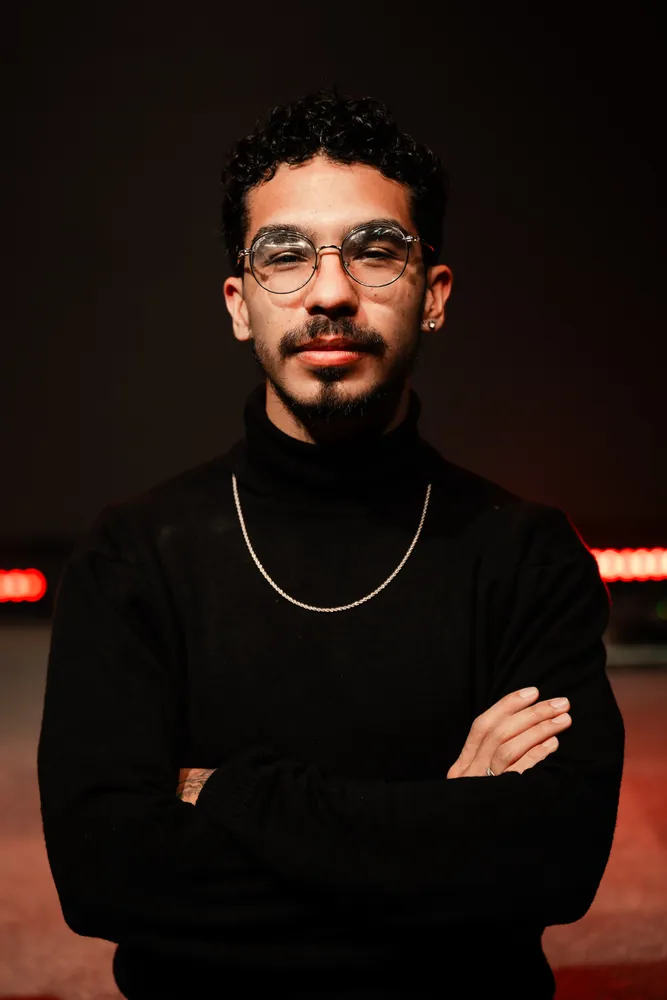

Portfólio — Vinícius Oliveira, fotógrafo e filmmaker

Olá, eu sou
Vinícius
Oliveira

Sobre mim
Sou Vinícius Oliveira, fotógrafo e filmmaker. A VYO é uma variação do meu nome: a força do estúdio está na autoria e na ligação com quem cria.
Uno experiência, técnica e sensibilidade para criar imagens com intenção, narrativa e qualidade de entrega. Profissional na execução, próximo no relacionamento.